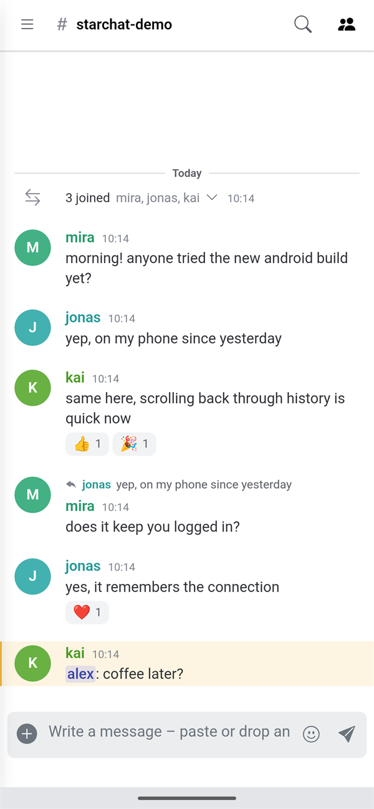

Chat on IRC, the easy way.
StarChat is a free IRC client for your browser, your computer and Android. With history, replies and reactions, on any network.
No sign-up needed. You can join the demo as a guest.


The conversations in the screenshots were written with AI help for this demo and sent by a script from test accounts.
Get StarChat
Use it in the browser or install the app.
Want to run the web client on your own server or put it into your site? See Install.
What it does
- Any IRC network. Pick one from the list or type in an address. No StarChat account and no central server.
- History and read markers carry over between your devices.
- Replies and reactions like in other chat apps. You can delete your own messages.
- Keyboard:
Ctrl+Pjumps to any channel,Ctrl+Fsearches. The usual slash commands work. - On your own site with one function call. Your site can log its users in.
- Light and dark, in English and German.
Networks can offer more
With a small file on its domain, a network can add profiles, friends, uploads, voice chat and push notifications. Networks without it work as plain IRC.
Where it comes from
StarChat has been the chat of ST-City, a German chat community, since early 2025 and grew there step by step. In November 2026 it was made neutral so any network can use it. Come say hi in #starchat on ST-City, that is also where the demo connects.
Open source
StarChat is MIT licensed. Code, releases and issues are on GitHub.